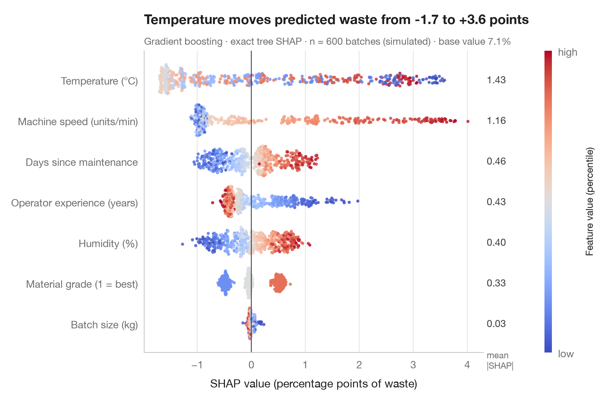

SHAP 汇总图（蜂群图）
每个学区在每项特征上的 SHAP 值，按特征取值着色，并给出平均 |SHAP| 重要性。

SHAP（SHapley Additive exPlanations；Lundberg 与 Lee，2017）将每个预测分解为可加的贡献，每个特征一份，使得 基准值 + 贡献之和 = 预测值。这些贡献是合作博弈论中的 Shapley 值：在特征加入的所有可能顺序上，每个特征的平均边际效应。
蜂群图为每个学区的每个特征画一个点。位置是 SHAP 值——该特征把这个学区的预测推高或拉低了多少——颜色是该特征本身的取值，从低（蓝）到高（红）。特征按平均 |SHAP| 排序，并在右侧标出作为全局重要性。右红左蓝、界线分明，表示单调效应；颜色混杂则提示非线性或交互作用。
数据为 statsmodels 自带的 1998 年 STAR 考试中加利福尼亚州 303 个学区（sm.datasets.star98）；结果变量为数学成绩高于全国中位数的学生占比（以百分点计），由学区的十项特征预测。模型为梯度提升回归，树模型的精确 SHAP 值来自 shap.TreeExplainer。为与图库风格一致，图形用 Matplotlib 绘制；shap.plots.beeswarm 一行代码即可得到类似视图。
代码及图中文字均为英文。
import matplotlib.pyplot as plt
import numpy as np
import shap
import statsmodels.api as sm
from sklearn.ensemble import GradientBoostingRegressor
# Data: 303 California school districts; outcome = % of students above the national median in maths
d = sm.datasets.star98.load_pandas().data
y = 100 * d["NABOVE"] / (d["NABOVE"] + d["NBELOW"])
names = {"LOWINC": "% low-income students", "PERASIAN": "% Asian students", "PERBLACK": "% Black students",
"PERHISP": "% Hispanic students", "AVYRSEXP": "Teacher experience (years)",
"AVSALK": "Teacher salary ($000)", "PERSPENK": "Spending per pupil ($000)",
"PTRATIO": "Pupils per teacher", "PCTAF": "% in college-prep courses",
"PCTYRRND": "% year-round schools"}
X = d[list(names)]
model = GradientBoostingRegressor(learning_rate=0.05, n_estimators=300, max_depth=2,
subsample=0.8, random_state=0).fit(X, y)
# Exact SHAP values for tree ensembles
sv = shap.TreeExplainer(model).shap_values(X) # shape: (districts, features)
importance = np.abs(sv).mean(axis=0)
order = np.argsort(importance) # least important at the bottom
fig, ax = plt.subplots(figsize=(8, 5.6))
rng = np.random.default_rng(0)
cmap = plt.get_cmap("coolwarm")
for i, j in enumerate(order):
v = sv[:, j]
xv = X.iloc[:, j].rank(pct=True).to_numpy() # colour = percentile of the feature value
# Beeswarm-style vertical jitter: wider where the points are denser
hist, edges = np.histogram(v, bins=60)
dens = hist[np.clip(np.digitize(v, edges) - 1, 0, len(hist) - 1)] / hist.max()
jitter = rng.uniform(-1, 1, len(v)) * 0.38 * np.sqrt(dens)
ax.scatter(v, i + jitter, c=xv, cmap=cmap, s=9, alpha=0.85, lw=0, vmin=0, vmax=1)
ax.text(1.01, i, f"{importance[j]:.1f}", transform=ax.get_yaxis_transform(), va="center",
fontsize=9.5, color="#3A3A3C")
ax.axvline(0, color="#3A3A3C", lw=0.8)
ax.set_yticks(range(len(order)), [names[X.columns[j]] for j in order])
ax.set_xlabel("SHAP value (percentage points)")
ax.grid(axis="x"); ax.grid(axis="y", visible=False)
ax.text(1.01, len(order) - 0.35, "mean\n|SHAP|", transform=ax.get_yaxis_transform(),
fontsize=8.5, color="#6E6E73", va="bottom")
cb = fig.colorbar(plt.cm.ScalarMappable(cmap=cmap), ax=ax, pad=0.09, aspect=40, ticks=[0, 1])
cb.ax.set_yticklabels(["low", "high"])
cb.set_label("Feature value (percentile)", fontsize=9.5)
cb.outline.set_visible(False)
low = sv[:, list(X.columns).index("LOWINC")]
ax.set_title(f"The share of low-income students moves predictions from {low.min():+.0f} to {low.max():+.0f} points", pad=26)
ax.text(0, 1.02, f"Gradient boosting · exact tree SHAP · n = {len(X)} districts · "
f"base value = {model.predict(X).mean():.0f}%", transform=ax.transAxes, fontsize=9.5,
color="#6E6E73")
plt.show()
图表使用了可选的 PyStatlas 样式：添加 plt.style.use("pystatlas.mplstyle") 即可完全还原其外观。
如何引用
PyStatlas 由 Thierry Warin 创建并维护。如果它对你的工作有所帮助，敬请引用。
Warin, T. (2026). SHAP summary (beeswarm). In PyStatlas: The Python Gallery of Statistical Graphics. https://warint.github.io/pystatlas/machine-learning/shap-beeswarm/
@misc{warin2026statlas,
author = {Warin, Thierry},
title = {PyStatlas: The Python Gallery of Statistical Graphics},
year = {2026},
howpublished = {\url{https://warint.github.io/pystatlas/}},
note = {Source code: https://github.com/warint/pystatlas}
}